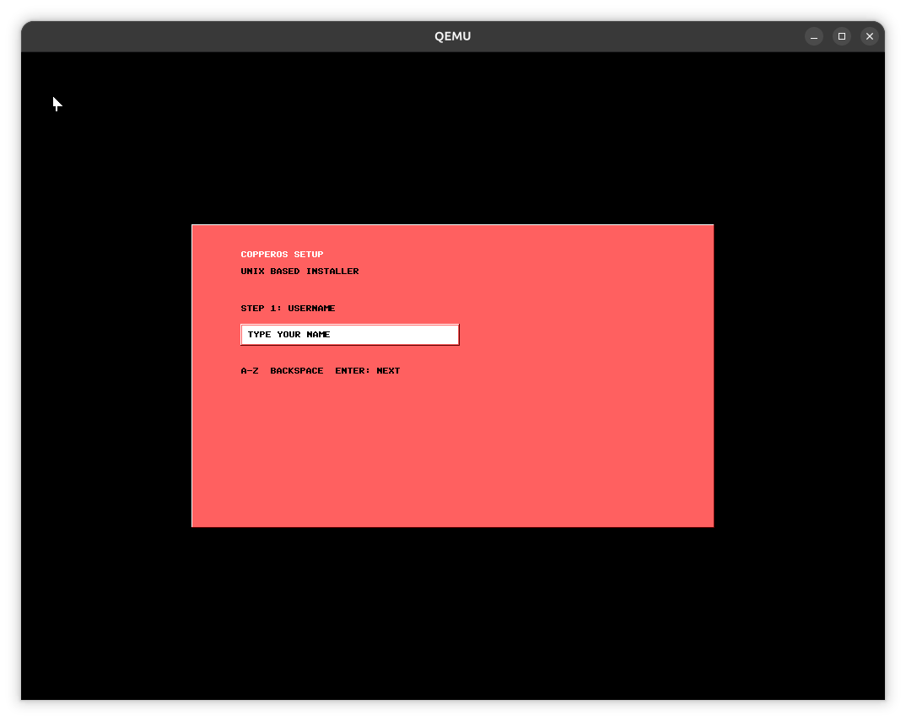
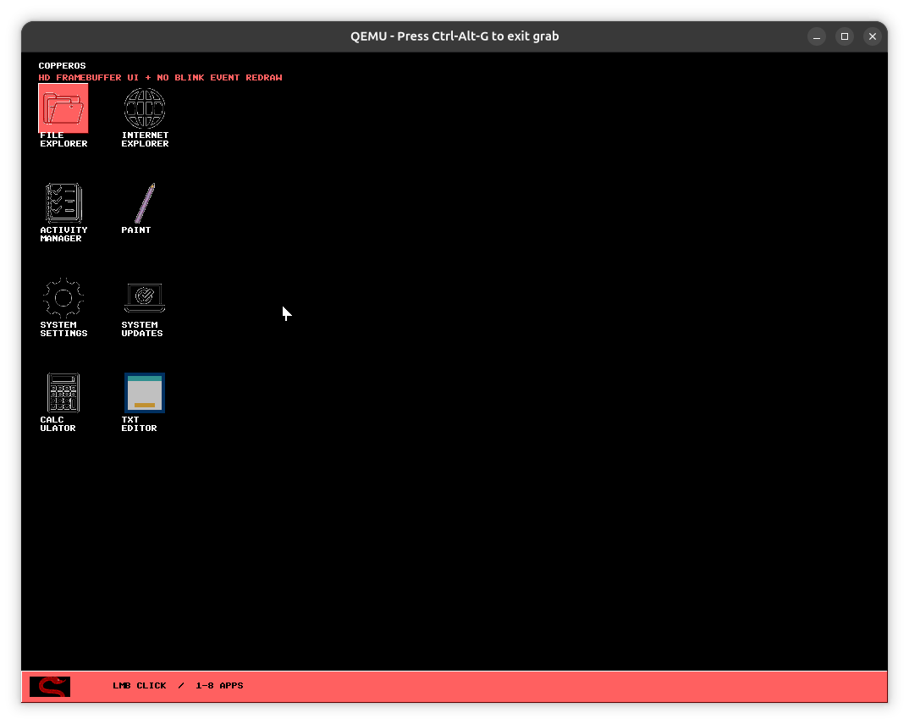

Clean first start
A tiny NASM boot path loads a freestanding 32-bit C kernel built for BIOS-era x86 graphics modes.
 v1.0 Copperhead
v1.0 Copperhead
A compact BIOS-booting hobby OS with a freestanding C kernel, VESA graphics, a Windows 95-inspired desktop, and a browser emulator that loads the CopperOS ISO directly.
CopperOS v1.0 Copperhead is intentionally compact: a BIOS boot sector written in NASM hands off to a freestanding 32-bit C kernel linked with an x86 cross-toolchain.
The release focuses on the full first-run arc. It boots, draws staged startup screens, collects setup details, plays a welcome animation, and lands on a black desktop with a taskbar, Start menu, windows, and pointer.
This is a hobby OS for inspection, boot demos, and kernel-rendered UI experiments. Apps are built into the kernel, not separate user-space programs yet.
A tiny NASM boot path loads a freestanding 32-bit C kernel built for BIOS-era x86 graphics modes.
The framebuffer targets HD 1280x720x8 first, then falls through broadly supported VESA modes.
Off-screen frame composition reduces full-screen blinking and prepares the interface for smoother animation.
CopperOS presents a Windows 95-inspired workspace with a black desktop, keyboard-driven pointer, taskbar, Start menu, window chrome, and setup-created login passcode.
Eight built-in apps ship with the release: File Explorer, Internet Explorer, Activity Manager, Paint, System Settings, System Updates, Calculator, and TXT Editor.
The wizard collects a username and creates a 4-digit passcode for the login screen.
The setup flow walks through install or try mode, disk target selection, desktop theme, and network choice.
A welcome animation plays before the desktop becomes available with the created passcode.


Complete packaged release for offline use.
Use this with QEMU, VirtualBox, or the browser emulator page.
Attach this image as a disk in a VirtualBox VM.
# Download the ISO from the release page, then run:
qemu-system-x86_64 -cdrom copperos.iso -m 256M -boot d
# From source:
make
make run